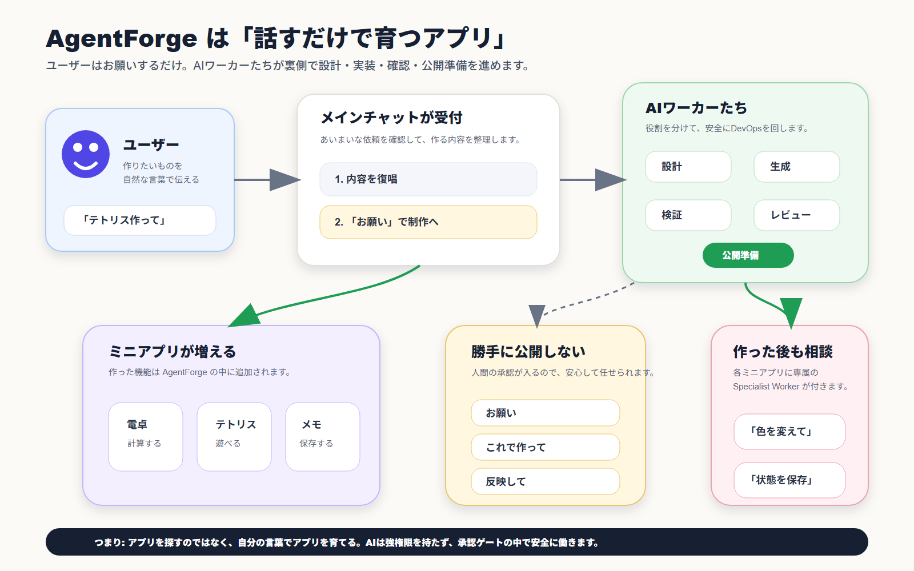
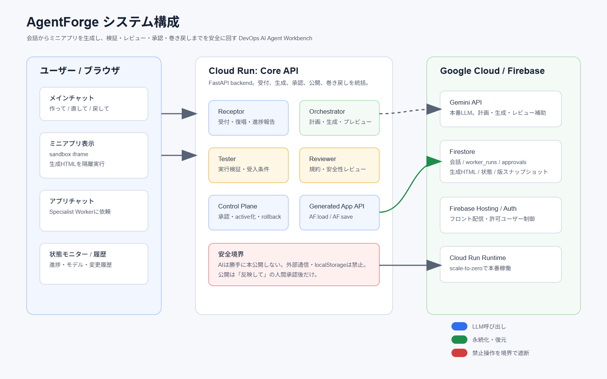
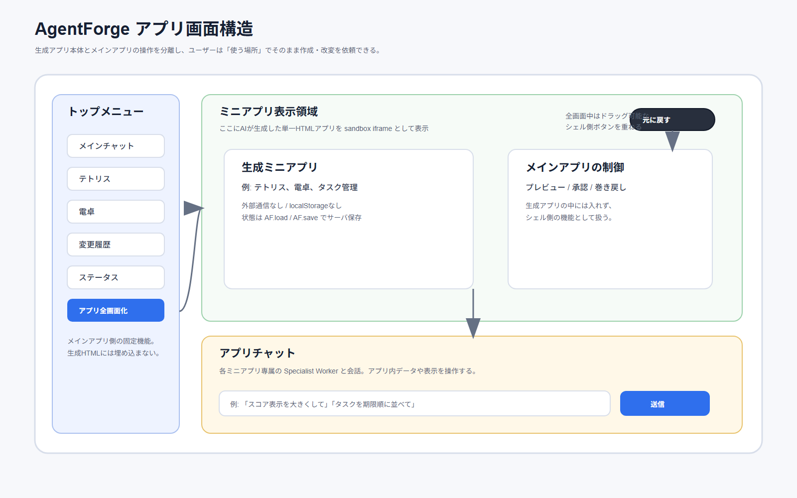
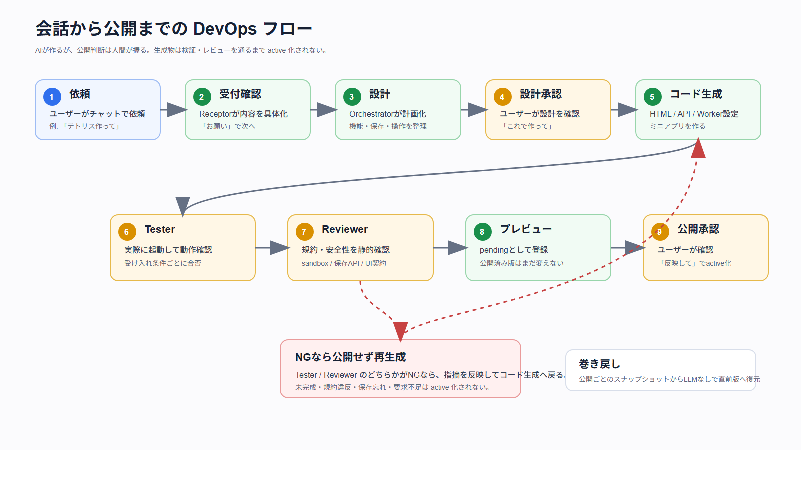
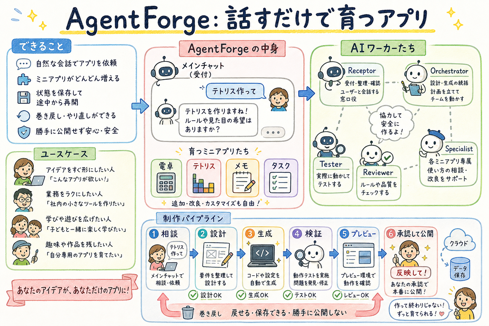

育てるアプリ - 会話だけで自分専用アプリを作って育てる
育てるアプリは、非エンジニアがメインチャットで話すだけで、自分専用のミニアプリを作成・改変・公開・巻き戻しできる自己拡張型の AI アプリです。技術基盤として AgentForge を使っています。
作品情報
- 作品ステータス: 開発中
- 作品URL: https://agentforge-devops.web.app
- GitHub: https://github.com/airpocket-soundman/AgentForge
- ライセンス: 【要差し替え】例: MIT License
- 動画: 【要差し替え】YouTube または Vimeo のデモ動画URL
- メンバー: 【要差し替え】チーム名・メンバー名
概要
電卓、タスク管理、スケジュール、メモ、家計簿、翻訳、ペイント、レタッチ、Bluesky クライアントの 9 種のデフォルトアプリを用意し、初心者はいきなり白紙から作るのではなく、既に使える道具の UI や機能を自分好みに直すところから始められます。
ユーザー体験は「選ぶ / 話す」「AI が直す / 作る」「確認して反映」の3ステップです。裏側では Receptor / Orchestrator / Tester / Reviewer / Specialist Worker が役割分担し、要求整理、設計、コード生成、実行検証、規約レビュー、プレビュー、承認公開までを1本の DevOps パイプラインとして管理します。
生成物は見た目の HTML だけではなく、state、commands、Worker prompt、評価ケースを含む「公開後にワーカーが操作できる contract」として作ります。Safety Harness は公開前の最終安全判定を行い、Agent Harness は判断・成果物・検証結果・承認履歴を記録します。

システム構成
AgentForge は、ユーザーが触るフロントエンド、ミニアプリ生成・承認・状態管理を行うバックエンド、そして Google Cloud / Firebase 上の実行基盤で構成しています。

フロントエンド
React + Vite。トップページ、Pipeline 詳細、Architecture 詳細、メインチャット、ミニアプリ表示領域、アプリチャット、ステータスモニター、変更履歴を提供します。
バックエンド
FastAPI。Receptor、Orchestrator、Control Plane、生成ミニアプリ実行API、Connector Bridge、承認・巻き戻しAPIを提供します。
AI ワーカー
Receptor / Orchestrator / Tester / Reviewer / Specialist Worker が、MCP 的な request/report で連携します。
実行基盤
Cloud Run、Firebase Hosting / Auth、Firestore を組み合わせ、会話、ワーカー状態、生成ミニアプリ、承認、監査ログ、アプリ状態を保存します。
解決したい課題と背景
世の中には小さな便利アプリが大量にありますが、一般ユーザーにとっては「探す」「選ぶ」「広告や不要機能を避ける」「自分好みに直す」こと自体が負担になっています。単純な計算機、メモ、PDF ビューワ、タスク管理のような道具でも、ストアで探すと広告が多かったり、ほしい機能だけが微妙に足りなかったりします。
一方で、自分で作れば解決できると分かっていても、非エンジニアが設計、実装、テスト、デプロイ、修正、巻き戻しまで行うのは現実的ではありません。生成AIでコードだけを作れても、それを安全に動かし、確認し、公開し、壊れたら戻す DevOps の流れが抜けると、日常的に使える道具にはなりません。
AgentForge は、このギャップを埋めるためのアプリです。ユーザーは「計算機を作って」「テトリスを作って」のように新しく作ることも、「メモの入力欄を広くして」「スケジュールにメモ欄を足して」のように既存のデフォルトアプリを育てることもできます。
想定ユーザー
主な想定ユーザーは、プログラミング経験はないが、自分用の小さなアプリを持ちたい一般ユーザーです。既製アプリの広告や複雑な設定に疲れていて、「必要な機能だけの自分専用ツールがほしい」と感じている人を想定しています。
AgentForge は、そうした人が最初はデフォルトアプリをそのまま使い、慣れてきたら UI の見た目、項目、操作、保存データ、ワーカーの扱える機能を少しずつ自分用に変えられることを目指しています。
プロダクトの特徴
AgentForge の最大の特徴は、アプリの中でアプリ自身を拡張できる再帰的な構造です。ユーザーがメインチャットで依頼すると、AgentForge 自身の中に新しいミニアプリが追加されます。生成されたミニアプリには専属の Specialist Worker が付き、そのアプリの中から内容の編集や操作を依頼できます。

1. 自然言語を検証済みミニアプリへ変換する Pipeline
AgentForge は、ユーザーの発話を単発のコード生成に投げるだけではありません。意図の判定はキーワードの固定ルールではなく LLM が担い、セッションの会話文脈とアクティブな機能一覧を読んで「新規作成 / 既存改修 / 調査 / 会話」を判定します。
コード生成後は Tester と Reviewer の両方を通ります。Tester は実際に動くか、主要操作が動作するかを確認します。Reviewer は sandbox、保存API、操作ツール、レスポンシブ対応、チャットUIの分離などの規約に合っているかを確認します。

2. 役割を分けた Architecture
AgentForge は、1つの AI に全権を渡す構造ではありません。ユーザーと話す Receptor、設計と生成を担う Orchestrator、実行検証の Tester、規約判定の Reviewer、公開後のミニアプリを操作する Specialist Worker を分離します。その外側で Control Plane、Safety Harness、Agent Harness、Sandbox、Version 管理が副作用を制御します。
3. 生成物を「操作可能な contract」として作る
AgentForge は、自然言語から見た目だけを作るのではなく、公開後に Specialist Worker が継続操作できる contract まで生成します。HTML、state、commands、Worker prompt、評価ケースを同時に設計し、受け入れ条件、Tester の検証観点、Reviewer の確認観点、Specialist Worker の操作例までを 1 つの生成単位として扱います。
- View artifact: 自己完結 HTML。外部 CDN、fetch、cookie、localStorage なしで sandbox 実行。
- State contract: データ中心アプリでは
worker_state_modeとstate_schemaを生成。 - Command surface:
window.applyAgentCommand(name,args)とcommands[]を一致させる。 - Worker prompt pack: 役割、API 仕様、聞き返し方針、危険操作方針、自然言語例を渡す。
- Eval cases: 一括削除、曖昧な対象、異常値、担当外の構造変更などをテストケース化。
4. Safety Harness と Quality Gates
公開前には Safety Harness が最終判定します。Tester / Reviewer の合否、禁止 API、外部リソース、Worker 契約の有無、stub 生成物の有無を統合し、通過した候補だけを preview / publish に進めます。
- Sandbox: 外部通信、cookie、localStorage、別ウィンドウに依存しないこと。
- Persistence: 状態を持つアプリが
AF.load()/AF.save()に接続されること。 - Worker operability: 主要操作が
commandsまたはstate_schemaで表現されること。 - External access: 外部 API 連携は Connector Bridge 経由のみ。
- Deletion safety: アプリ削除は保存データも失われることをユーザーに確認し、操作証跡を監査ログに残すこと。
開発素材
Google Cloud、Cloud Run、Gemini API、Firebase Hosting、Firebase Authentication、Firestore、FastAPI、React、TypeScript、Docker、Claude Code CLI（開発・デモ用 LLM ブリッジ）を使用しています。

タグ
findy_hackathon
AIエージェント
DevOps
GoogleCloud
Gemini
CloudRun
Firebase
Firestore
React
FastAPI
マルチエージェント
生成AI
関連リンク
説明資料はリポジトリ内 docs/index.html にあります。ワーカー定義・コード規約・アーキテクチャの正本ドキュメントを含みます。
投稿前チェックリスト
- 作品ステータスを「開発中」または「完成」にする。
- 作品タイトル、概要、デプロイ済みURLを入力する。
- YouTube または Vimeo のデモ動画URLを入力する。
- システム構成図を画像としてアップロードする。
- タグに
findy_hackathonを必ず入れる。 - ストーリーに「課題と背景」「想定ユーザー」「プロダクトの特徴」が入っていることを確認する。
- 関連リンクに GitHub 公開リポジトリURL、デプロイURLを入れる。